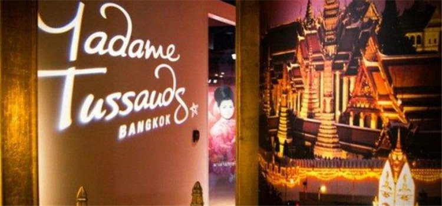
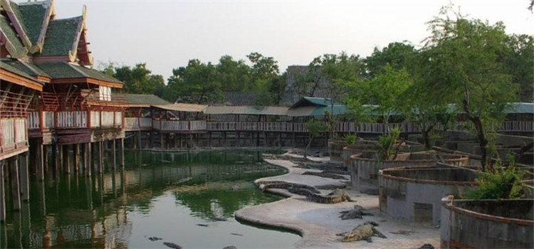

著名景点
#曼谷杜莎夫人蜡像馆#
曼谷是继香港和上海之后第三座成立杜莎夫人蜡像馆的亚洲城市，默林娱乐集团斥资5亿打造的3千平方米东南亚第一家曼谷杜莎夫人蜡像馆，位于Siam Discovery6层，Phathumwan拉玛一世路989号。安吉丽娜·朱莉，布拉德.皮特，迈克尔.杰克逊等蜡像都在此第一次展出。

图：曼谷杜莎夫人蜡像馆
曼谷杜莎夫人蜡像馆与其它馆一样也展出了超过70位国际及泰国知名的人物蜡像，在国王的赞助下，蜡像馆的泰国皇室厅还展出了哈里克王朝的Mahitala Thibed Adulyadej Vikrom Phra Baroma Rajajanok王子和Srinagarindra公主的蜡像。
电话：+66-02-6580060
地址：6th Floor, Siam Discovery, Rama 1 Rd, Pathumwan, Bangkok
#鳄鱼潭#
鳄鱼潭位于曼谷以东30公里的北揽，面积约4万平方米，是全世界最大的鳄鱼饲养场。这里的驯鳄表演，是外国旅游者争相一睹的节目。鳄鱼潭创始于1950年，创始人和主人是华人杨海泉，从2条鳄鱼开始，非洲鳄，澳洲鳄及中国的扬子鳄等10多种，数量达十多万条的全球最大鳄鱼饲养场。

图：鳄鱼潭
地址：North Lan 30 km sisih wetan saka, Bangkok
#黎明寺#
黎明寺（wat arun）又称为破晓寺或郑王庙，大概是因为本寺与郑王关系密切的原故。黎明寺的故事得从大城时代开始讲起，正确的建寺年代已不得而知。
郑王驱逐缅军后，带领部队顺水而下，军船经过寺前时，正好是黎明时分，郑王便令船停于寺前，上岸礼拜，后来郑王登上王位后，就下令重修佛寺，并根据当年情况将寺名改为黎明寺。预备在湄南河南岸建造王宫，将黎明寺做为王室家庙，西元1778年还移请玉佛到黎明寺供奉。
电话：+66-02-4655640

图：黎明寺
地址：34 Arun Amarin Road,Bangkokyai District, Bangkok
#大皇宫#
大皇宫位于首都曼谷市中心，位于昭被耶河与湄南河交汇之
畔，紧偎湄南河，由一组布局错落的建筑群组成，是暹逻式风格，汇集了泰国绘画、雕刻和装饰艺术的精华。宫廷建筑以白色为主，四周筑有白色宫墙。宫墙高约5米，总长1900米，主要建筑物有阿玛林宫、节基宫、律实宫和玉佛寺等。此外，由拉玛八世兴建的宝隆皮曼宫，是招待外国元首的宾馆。
交通：公交船至The Chang（N9）码头；公共巴士1，3， 25，44，47，53，60，82，91等多路车可到达附近
电话：+66-2-6235500
图：大皇宫
地址：Thanon Na Phra Lan, Phra Borom Maha Ratchawang, Phra Nakhon, Bangkok
#安帕瓦水上市场#
安帕瓦水上市场坐落于夜功府的小镇安帕瓦，距离泰国首都曼谷约一百公里，是泰国比较有名的水上市场之一，非商业化，主要还是泰国本土人去得多，也有很多外国游客，在这里可以体会到浓浓的泰国集市文化。市场属于晚上集市，每当夜幕降临的时候会有许多萤火虫出来作伴。
图：安帕瓦水上市场
地址：Prachaset rd, Amphawa, Samut Songkhram, Bangkok
#暹罗广场#
暹罗广场始建于1965年，地皮由朱拉隆功大学所有。初时，
暹罗广场只有平常的租户，后来吸引到品牌商户，令至暹罗广场向周边扩张。2007年上映的泰国电影《暹罗之恋》有多个镜头也是在此拍摄。
电话：+66-2-2098888
地址：Siam Square 1, Pathum Wan, Bangkok
图：暹罗广场
#拳击馆#
拉差达慕拳击馆（Ratchadamnoen Boxing Stadium），位于民主纪念碑附近，比赛日为每周一、周三、周四及周日的傍晚时候，其中周四的比赛最精彩。
蓝吡尼拳击馆（Lumphini Boxing Stadium），位于蓝吡尼公园附近，是泰国最著名拳击馆，比赛日为每周二、周五及周六的傍晚时候，其中周二的比赛最精彩，经常在电视中直播。普通车47路可到达。
图：拳击馆
地址：Ratchadamnoen Nok Road, Pomprab Sattruphai, Bangkok
#泰国国家大剧院#
泰国国家大剧院（National Theatre）：剧院位于国家博物馆以东约10分钟行程。国家剧院有表演“Khon”的传统，每月的最后一个周五和周六有演出。观赏泰国古典舞蹈是来曼谷旅游的游客所热衷的节目。
其中最为著名的古典舞蹈为“Khon”，由带假面具的男性舞者演出。这原是一种宫廷舞蹈，演出时戴着面具，没有对话，以音乐、舞蹈和肢体表达。
电话：+66-2-2241352
图：泰国国家大剧院
地址：2 Rachini Road, Phra Borommaharatchawang Sub-District, Phra Nakhon District, Bangkok
私房景点
#蓝毗尼公园#
曼谷市区最大的公园，不过比想象中小，有很多来这里慢跑、骑自行车健身的人，没看见什么游客，倒是看见了非常原生态的大蜥蜴。。。是个休闲散心的好去处，而且绿化比较好，树荫下面也不会觉得太热。
到达方式：坐BTS到Salangdaeng站或坐地铁到Silom站，公交40路。
开放时间：4：30-21：00
门票：免费
电话：+66-2-2525948
图：蓝毗尼公园
地址：139/4 Witthayu Rd, Lumphini, Pathum Wan, Bangkok
#金山寺#
不确定你之前有没有去过，跟曼谷其他名声赫赫的寺庙比起来，这里真的算比较冷清的了。寺庙其实很小，在山顶，山不高，爬个十来分钟就能登顶了，在山顶可以俯瞰曼谷市景，视野很好，我去的时候刚下了一场雨，山上空气清新。登山过程中还会路过一个小的咖啡店，可以在里面休息。
到达方式：在水门可以坐运河船直达 ，起点水门，终点金山寺。也可乘坐8、37、47路公共巴士，到Wat Saket下车。
开放时间：7：30-17：30
PS：建议傍晚的时候去，中午、下午太热了。
电话：+66-02-2234561
图：金山寺
地址：344/4 Wat Saket Chakkapatdiphong Rd.BanbatPomprapsattruphai, Samphanthawong, Bangkok
#曼谷文化艺术中心#
游客非常非常少，7-9层为临时展览区域，经常有不同主题的特别展览，建议提前查询官网了解相关资讯。还有一些艺术家会直接坐在店外演示、交流，里面也有很多特色店铺和咖啡店，适合文艺青年们来消遣放松。
到达方式：乘坐BTS到National Stadium，出站从天桥即可进入。
开放时间：10：00-21：00（周一、宋干节、元旦闭馆）
门票：免费
电话：+66-2-2146630
图：曼谷文化艺术中心
地址：939 Rama 1 Road, Wangmai, Pathumwan, Bangkok
#朱拉隆功大学#
我每到一座城市都喜欢逛逛那边的大学，算是个人的小癖好吧，这里也没有什么游客，都是学生，粉色的校车很可爱，学校环境很好，离商圈也蛮近的。
到达方式：乘坐地铁到Sam Yan站，或在Siam附近步行前往。
电话：+66-02-2186422
图：朱拉隆功大学
地址：The Office of President, Chulalongkorn University, PhyathaiRoad, Bangkok